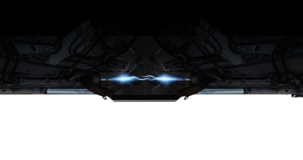
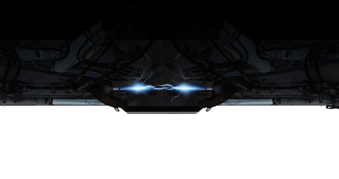

Scroll down
Pemerataan akses internet untuk wilayah 3T (Terluar, Terdepan, dan Tertinggal).
Susah sih, tapi berguna banget untuk mewujudkan visi Indonesia Emas 2045!
Alasan masyarakat wilayah 3T susah akses internet:
Tahukah kamu?
Para anggota TNI yang yang bertugas di Pos Satgas Pengamanan Perbatasan Indonesia-Malaysia di Temajuk, Kecamatan Paloh, Sambas, Kalimantan Barat sangat takut akan “Hujan”.
Pasalnya, jika hujan mengguyur di wilayah tapal batas, semua akses komunikasi, termasuk internet terputus. Sebaliknya, tentara Malaysia tetap aman mengakses internet selama hujan. Bahkan sinyal internet Malaysia bisa diakses di wilayah Indonesia!
Bagaimana cara anggota TNI mengakses internet selama menjaga perbatasan?
Setali tiga uang, para anggota TNI di Pos Somografi, Papua, rela mendaki gunung selama 1 jam demi bisa mengakses internet untuk menghubungi keluarga.
Tak jarang mereka membuka tenda, jika pendakian dilakukan malam hari.
Kendati sudah berdiri BTS, sinyal di Somograf belum stabil.
Warga perbatasan lebih pilih provider malaysia
Buruknya, sinyal membuat masyarakat di perbatasan memilih akses internet dari Negeri Jiran karena lebih cepat. Kendati demikian, kedepannya warga berharap dapat menggunakan layanan dari perusahaan nasional.

Wujudkan Sambas Bebas
Blank Spot!
6 FAKTA SAMBAS SEBAGAI WILAYAH 3T
Kedaulatan NKRI Prioritas Kami
Sektor pertahanan dan keamanan seperti Pos-Pos TNI penjaga perbatasan menjadi prioritas pertama yang akan memperoleh akses internet melalui layanan internet satelit SATRIA-I.